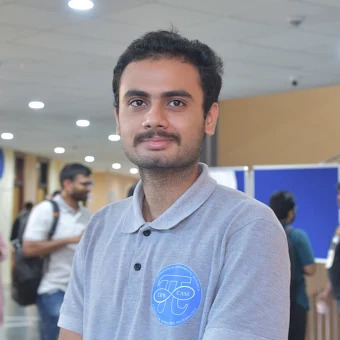

Group Leader

Dr. Laltu Sardar
📞 +91 (0)471 – 277-8396
✉️ laltu.sardar@iisertvm.ac.in
Dr. Laltu Sardar is an Applied Cryptography Researcher and Assistant Professor at the School of Data Science, IISER Thiruvananthapuram. He received his Ph.D. in Computer Science with a specialisation in Searchable Encryption. His research focuses on secure and efficient solutions for secure cloud computing, data privacy, and encrypted graph analytics, combining rigorous theory with real-world prototype implementations.
PhD Students
Mohamed Kassim I
Post-Quantum Applied Cryptography
Positions available — see Join Us for current PhD openings.
Bachelor’s / Minor Project Students

Manit Kishor
Study of Quantum-Safe VDF
Looking for project supervision? Visit Join Us for current opportunities.
Short-Term Interns
Ameen Ahsan M H
Designing App for Academic Certificate Verification
Ann Maria Benny
Secure Private Communication for Defence Personnel
Akshit Agarwal
Survey of Synchronized Multi-User DSSE Scheme
Positions available — see Join Us for upcoming openings.